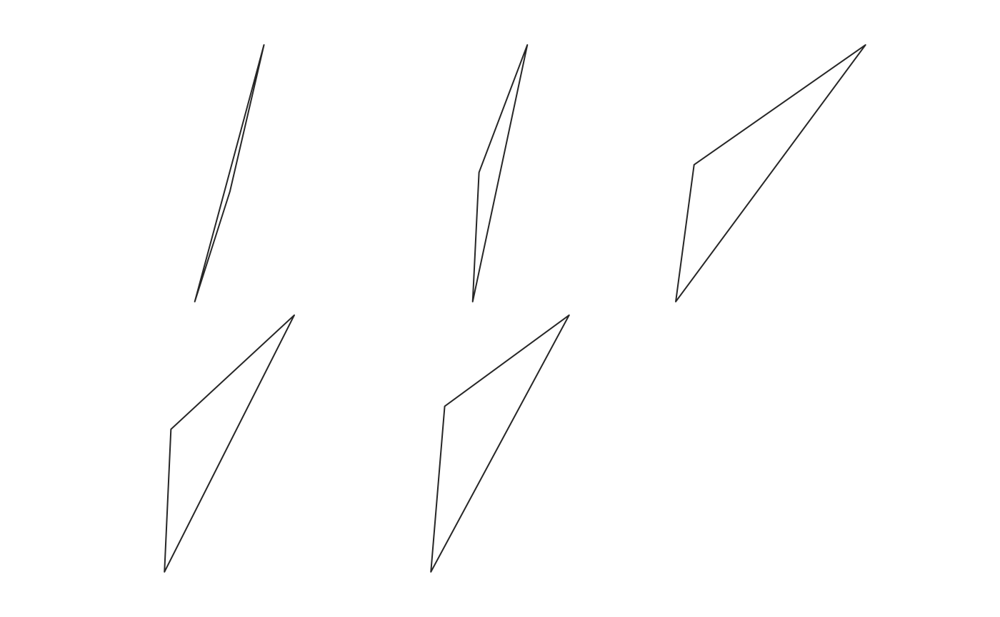

This vignette consists in two parts:
.mom file format for morphometric data;Momit is still in active development, as part of MomX.
.mom file format for morphometricsMorphometrics data essentially consist of coordinates and, if any, associated covariates.
Existing morphometrics file format, eg .tps, .nts, .xml, etc. are not fully generic and/or explicitely defined/consistent, etc.
Here is proposed the .mom (short for modern morphometrics and to echo MomX) file format along with R utilities to import, parse, manipulate, export them.
.mom files are easy to read, for humans, and to parse, for computers.
.mom files are plain text files whose single line syntax fall within one of the five following rules:
| Rule | Pattern | What | Examples |
|---|---|---|---|
| 1 | space-separated numbers | coordinates in each dimension |
-0.5 0.5; 0 0 0
|
| 2 | word and word/number | covariate name and its value | scale 56 |
| 3 | single word | partition of coordinates |
LM ; out
|
| 4 | tilde and word | shape name when collated |
~iris150 ; ~H. sapiens
|
| 5 | anything else | ignored | #a comment |
Handling of units and of missing data is planned.
A single shape with one covariate:
name brahma
type beer
37 561
40 540
40 529
[...]Two shapes with more covariates/cofactors:
~0001-cAglan_O10VD
var Aglan
domes cult
view VD
ind O10
-0.5000 0.00000
-0.4967 0.01035
-0.4935 0.02414
[...]
~0001-cAglan_O10VL
var Aglan
domes cult
view VL
ind O10
-0.5000 0.00000
-0.4995 0.01018
-0.4957 0.02022
[...]A single shape with landmarks and 2 partitions of semi-landmarks:
id 571
taxa T. mono
ldk
697 977
766 991
704 1046
[...]
sl1
541 962
542 965
543 967
[...]
sl2
541 949
542 952
542 954
[...]A shape with nothing else but coordinates:
200 91
187 95
173 105
[...]Examples adapted from Momocs: bot[1], olea[1], charring[1], shapes[1].
If you’re here, you probably have morphometric data that you want to import into R and/or convert to another format. Momit aims at making this easy. Actually, most of the time, you will only need two (or even one) function to do this: 1. from_*(), that will find, read and parse them to a `data_frame 2. to_*() translate them and write to the format you want
The general workflow from (and possibly to) files on your machine and R’s memory follows:
files +--> from_*() +--------> to_*() +----> files
└─ list.files └─ soon
└─ readLines
└─ some polish†
└─ list of single ind.
└─ more polish†
└─ parse†
└─ momify
└─ bind mom_df
*: one of supported formats (eg. .mom, .tps, etc.)
†: depends on the format(ting) being treatedBelow from, I detailed the main steps that happen behind the curtain.
The only mandatory part below is from_*, in the case where you would only like to import {.mom, .tps, .nts, etc.} files into R (no convert, no export). See the first example below.
.mom files in the folder “data”, and want to import them into R:from_mom("data/")
__ Below, not yet implemented __
Same but wih .tpsfiles and you want to collate them into a single .mom file:from_tps() %>% to_mom() %>% write_single()
You have thousands of outlines of the same object, spread accross a messy (or neat) subfolders structures. Outlines coordinates represent two views (say lateral and dorsal), and saved as .mom files with the appropriate cofactor (say view dorsal) and you only want the dorsal outlines to be imported in Momocs:from_mom() %>% filter(view=="dorsal") %>% to_Out()
Talking about pipes, all MomX packages use them intensively, so you may want to read magrittr’s vignette
We will follow all the thing that happen along the path schematized above. You do not really need to understand (or even read) this section if you just want to convert your files. But in case you need to custom something, here is the long story.
Let’s create a .mom file from scratch. It contains four individuals with some coordinates (we don’t care whether they are outlines, curves, landmarks, etc. here they’re truncated anyway) and four covariates: variety, domestication status, view, individual name and size.
We first load Momit (that re-exports magrittr’s pipe), and friends.
library(dplyr) # we will need it after
library(Momit)
library(Momocs) # same, and order matters since Momocs hacks some dplyr methodsThen I have a file named foo.mom in a folder named mom_files that I (both) created using:
dir.create("mom_files")
"~0001-cPastor_O10VD
var Pastor
domes cult
view VD
ind O10
size 2.23
-0.5000 0.00000
-0.4967 0.01035
-0.4935 0.02414
~0001-cPastor_O10VL
var Pastor
domes cult
view VL
ind O10
size 2.43
-0.5000 0.00000
-0.4995 0.01018
-0.4957 0.02022
~0001-cIvorra_O11VL
var Ivorra
domes wild
view VL
ind O11
size 2.56
-0.5000 0.00000
-0.4985 0.0112
-0.4845 0.021
~0001-cIvorra_O11VD
var Ivorra
domes wild
view VD
ind O11
size 2.74
-0.5000 0.00000
-0.4995 0.011
-0.49 0.0198
~0005-cBonhomme_O11VD
var Bonhomme
domes wild
view VD
ind O11
size 2.55
-0.5000 0.00000
-0.499 0.012
-0.49 0.0186" %>%
writeLines("mom_files/foo.mom")We can now read this file:
harvest() function will find all the files, when provided containing folder(s) or, better, a pattern which is a regular expression. If you are not yet familiar with regular expression, go learn them, they are among the most profitable investment you can make when talking to a computer.
A list of files, read as lines, is returned. In most cases, from_* functions will harvest files for you, and a list of folders/files can also be passed directly to from_* functions. See those examples.
If you actually created the file and folder this should work now:
Otherwise just use example_data (see ?example_data):
## # A tibble: 5 x 7
## name var domes view ind size coo
## <chr> <chr> <chr> <chr> <chr> <chr> <list>
## 1 0001-cPastor_O10VD Pastor cult VD O10 2.23 <S3: coo>
## 2 0001-cPastor_O10VL Pastor cult VL O10 2.43 <S3: coo>
## 3 0001-cIvorra_O11VL Ivorra wild VL O11 2.56 <S3: coo>
## 4 0001-cIvorra_O11VD Ivorra wild VD O11 2.74 <S3: coo>
## 5 0005-cBonhomme_O11VD Bonhomme wild VD O11 2.55 <S3: coo>We now have a mom_df: a data.frame containing: * several individuals * each with names, covariates and coordinates
Some equivalent of this importing step follows. They may be useful to understand should you want to write your own importers. As long as your format is used by others, I will be happy to write it myself and include it in Momocs. Just drop me a line.
# from_mom("mom_files") # will find all .mom files in "mom_files/"
# from_mom() # will find all .mom files in the working
# directory (I can't myself because I have
# more than one in my Momit folder)
# Below, what's done by from_mom()
# list.files("mom_files/", full.names=TRUE) %>%
# lapply(readLines) %>%
# parse_mom()The last lines reproduce what is internally done by from_mom. Let’s see what it contains. Note the absence of parentheses, that prints the definition of the function.
## function(pattern="mom$", where=getwd(), encoding="unknown", ...){
## if (!is.list(where))
## x <- harvest(pattern=pattern, where=where, encoding=encoding, ...)
## else
## x <- where
## x %>% parse_mom()
## }
## <bytecode: 0x7f8bba2da8f8>
## <environment: namespace:Momit>harvest itself eases the passing of selected files. All from_* functions have the same skeleton. You can dissecate it with harvest (again, no quotes). Note that this is not peculiar to Momit, it would work with all R functions. For methods, you will need to add the concerned class (eg print.data.frame).
Because once you started to like, you will love it. Particularly if you do some “modern R”. If you never heard of it or if you do not think it’s worth the pain, let me disagree with you and please read the dplyr’s introduction (5 min), and R for data science (from 2 days to 2 years).
Alternatively, just keep reading this vignette.
Did you ever need to filter some data to retain only some, say species; or to transforms some variables? Of course you did. With dplyr handling data becomes easy. All operations that follow depends on dplyr’s verbs that work just like exemplified in the vignette mentionned above since mom_df (what is returned by the from_ importers is also a data.frame).
You can use select to select, reorder, rename some columns:
## # A tibble: 5 x 3
## name coo size
## <chr> <list> <chr>
## 1 0001-cPastor_O10VD <S3: coo> 2.23
## 2 0001-cPastor_O10VL <S3: coo> 2.43
## 3 0001-cIvorra_O11VL <S3: coo> 2.56
## 4 0001-cIvorra_O11VD <S3: coo> 2.74
## 5 0005-cBonhomme_O11VD <S3: coo> 2.55## # A tibble: 5 x 6
## name author domes ind size coo
## <chr> <chr> <chr> <chr> <chr> <list>
## 1 0001-cPastor_O10VD Pastor cult O10 2.23 <S3: coo>
## 2 0001-cPastor_O10VL Pastor cult O10 2.43 <S3: coo>
## 3 0001-cIvorra_O11VL Ivorra wild O11 2.56 <S3: coo>
## 4 0001-cIvorra_O11VD Ivorra wild O11 2.74 <S3: coo>
## 5 0005-cBonhomme_O11VD Bonhomme wild O11 2.55 <S3: coo>## # A tibble: 5 x 3
## name var coo
## <chr> <chr> <list>
## 1 0001-cPastor_O10VD Pastor <S3: coo>
## 2 0001-cPastor_O10VL Pastor <S3: coo>
## 3 0001-cIvorra_O11VL Ivorra <S3: coo>
## 4 0001-cIvorra_O11VD Ivorra <S3: coo>
## 5 0005-cBonhomme_O11VD Bonhomme <S3: coo>mutate is your friend.
As you may have noticed, all columns but coordinates partitions are of class character. You should explicitely redeclare the class of each covariate columns. This seems boring at the first glance but I want you to a lot of time/enthusiasm in the end. The good news is that you can do it easily with mutate:
## name var domes view ind size
## "character" "character" "character" "character" "character" "character"
## coo
## "list"x <- mutate(x,
var= as.factor(var),
domes= as.factor(var),
view= as.factor(view),
ind= as.factor(ind),
size= as.numeric(size))
# If you have many columns, you can try one of mutate variants.
# see how the labels below column names have changed.
# below is the x, you shoud use for further analyses (mostly if you stay in R)
x ## # A tibble: 5 x 7
## name var domes view ind size coo
## <chr> <fct> <fct> <fct> <fct> <dbl> <list>
## 1 0001-cPastor_O10VD Pastor Pastor VD O10 2.23 <S3: coo>
## 2 0001-cPastor_O10VL Pastor Pastor VL O10 2.43 <S3: coo>
## 3 0001-cIvorra_O11VL Ivorra Ivorra VL O11 2.56 <S3: coo>
## 4 0001-cIvorra_O11VD Ivorra Ivorra VD O11 2.74 <S3: coo>
## 5 0005-cBonhomme_O11VD Bonhomme Bonhomme VD O11 2.55 <S3: coo>mutate can also be used to create new columns on the fly:
## # A tibble: 5 x 9
## name var domes view ind size coo size_2 size_sqrt
## <chr> <fct> <fct> <fct> <fct> <dbl> <list> <dbl> <dbl>
## 1 0001-cPastor_… Pastor Pastor D O10 2.23 <S3: c… 4.97 1.49
## 2 0001-cPastor_… Pastor Pastor L O10 2.43 <S3: c… 5.90 1.56
## 3 0001-cIvorra_… Ivorra Ivorra L O11 2.56 <S3: c… 6.55 1.6
## 4 0001-cIvorra_… Ivorra Ivorra D O11 2.74 <S3: c… 7.51 1.66
## 5 0005-cBonhomm… Bonhom… Bonho… D O11 2.55 <S3: c… 6.50 1.60## # A tibble: 5 x 7
## name var domes view ind size coo
## <chr> <fct> <fct> <fct> <fct> <dbl> <list>
## 1 0001-cPastor_O10VD Pastor Pastor VD O10 2.23 <S3: coo>
## 2 0001-cPastor_O10VL Pastor Pastor VL O10 2.43 <S3: coo>
## 3 0001-cIvorra_O11VL Ivorra Ivorra VL O11 2.56 <S3: coo>
## 4 0001-cIvorra_O11VD Ivorra Ivorra VD O11 2.74 <S3: coo>
## 5 0005-cBonhomme_O11VD Bonhomme Bonhomme VD O11 2.55 <S3: coo>## # A tibble: 2 x 7
## name var domes view ind size coo
## <chr> <fct> <fct> <fct> <fct> <dbl> <list>
## 1 0001-cIvorra_O11VL Ivorra Ivorra VL O11 2.56 <S3: coo>
## 2 0001-cIvorra_O11VD Ivorra Ivorra VD O11 2.74 <S3: coo>## # A tibble: 4 x 7
## name var domes view ind size coo
## <chr> <fct> <fct> <fct> <fct> <dbl> <list>
## 1 0001-cPastor_O10VD Pastor Pastor VD O10 2.23 <S3: coo>
## 2 0001-cPastor_O10VL Pastor Pastor VL O10 2.43 <S3: coo>
## 3 0001-cIvorra_O11VL Ivorra Ivorra VL O11 2.56 <S3: coo>
## 4 0001-cIvorra_O11VD Ivorra Ivorra VD O11 2.74 <S3: coo>## # A tibble: 4 x 7
## name var domes view ind size coo
## <chr> <fct> <fct> <fct> <fct> <dbl> <list>
## 1 0001-cPastor_O10VD Pastor Pastor VD O10 2.23 <S3: coo>
## 2 0001-cPastor_O10VL Pastor Pastor VL O10 2.43 <S3: coo>
## 3 0001-cIvorra_O11VL Ivorra Ivorra VL O11 2.56 <S3: coo>
## 4 0001-cIvorra_O11VD Ivorra Ivorra VD O11 2.74 <S3: coo>## # A tibble: 1 x 7
## name var domes view ind size coo
## <chr> <fct> <fct> <fct> <fct> <dbl> <list>
## 1 0001-cIvorra_O11VL Ivorra Ivorra VL O11 2.56 <S3: coo>## # A tibble: 2 x 7
## name var domes view ind size coo
## <chr> <fct> <fct> <fct> <fct> <dbl> <list>
## 1 0001-cPastor_O10VD Pastor Pastor VD O10 2.23 <S3: coo>
## 2 0001-cPastor_O10VL Pastor Pastor VL O10 2.43 <S3: coo>## # A tibble: 3 x 7
## name var domes view ind size coo
## <chr> <fct> <fct> <fct> <fct> <dbl> <list>
## 1 0001-cIvorra_O11VL Ivorra Ivorra VL O11 2.56 <S3: coo>
## 2 0001-cIvorra_O11VD Ivorra Ivorra VD O11 2.74 <S3: coo>
## 3 0005-cBonhomme_O11VD Bonhomme Bonhomme VD O11 2.55 <S3: coo>If you need to select individuals by their positions, yet usually that’s not a good idea, you can use slice:
## # A tibble: 5 x 7
## name var domes view ind size coo
## <chr> <fct> <fct> <fct> <fct> <dbl> <list>
## 1 0001-cPastor_O10VD Pastor Pastor VD O10 2.23 <S3: coo>
## 2 0001-cPastor_O10VL Pastor Pastor VL O10 2.43 <S3: coo>
## 3 0001-cIvorra_O11VL Ivorra Ivorra VL O11 2.56 <S3: coo>
## 4 0001-cIvorra_O11VD Ivorra Ivorra VD O11 2.74 <S3: coo>
## 5 0005-cBonhomme_O11VD Bonhomme Bonhomme VD O11 2.55 <S3: coo>## # A tibble: 1 x 7
## name var domes view ind size coo
## <chr> <fct> <fct> <fct> <fct> <dbl> <list>
## 1 0001-cPastor_O10VD Pastor Pastor VD O10 2.23 <S3: coo>## # A tibble: 2 x 7
## name var domes view ind size coo
## <chr> <fct> <fct> <fct> <fct> <dbl> <list>
## 1 0001-cPastor_O10VD Pastor Pastor VD O10 2.23 <S3: coo>
## 2 0001-cPastor_O10VL Pastor Pastor VL O10 2.43 <S3: coo>Whether you just want an overview of your data or do all the analyses with Momocs, going there from Momit is straightforward.
## # A tibble: 5 x 7
## name var domes view ind size coo
## <chr> <fct> <fct> <fct> <fct> <dbl> <list>
## 1 0001-cPastor_O10VD Pastor Pastor VD O10 2.23 <S3: coo>
## 2 0001-cPastor_O10VL Pastor Pastor VL O10 2.43 <S3: coo>
## 3 0001-cIvorra_O11VL Ivorra Ivorra VL O11 2.56 <S3: coo>
## 4 0001-cIvorra_O11VD Ivorra Ivorra VD O11 2.74 <S3: coo>
## 5 0005-cBonhomme_O11VD Bonhomme Bonhomme VD O11 2.55 <S3: coo>
## Out (outlines)
## - 5 outlines, 3 +/- 0 coords (in $coo)
## - 6 classifiers (in $fac):
## # A tibble: 5 x 6
## name var domes view ind size
## <chr> <fct> <fct> <fct> <fct> <dbl>
## 1 0001-cPastor_O10VD Pastor Pastor VD O10 2.23
## 2 0001-cPastor_O10VL Pastor Pastor VL O10 2.43
## 3 0001-cIvorra_O11VL Ivorra Ivorra VL O11 2.56
## 4 0001-cIvorra_O11VD Ivorra Ivorra VD O11 2.74
## 5 0005-cBonhomme_O11VD Bonhomme Bonhomme VD O11 2.55
## - also: $ldk## Ldk (landmarks)
## - 5 landmarks, 3 +/- 0 coords (in $coo)
## - 6 classifiers (in $fac):
## # A tibble: 5 x 6
## name var domes view ind size
## <chr> <fct> <fct> <fct> <fct> <dbl>
## 1 0001-cPastor_O10VD Pastor Pastor VD O10 2.23
## 2 0001-cPastor_O10VL Pastor Pastor VL O10 2.43
## 3 0001-cIvorra_O11VL Ivorra Ivorra VL O11 2.56
## 4 0001-cIvorra_O11VD Ivorra Ivorra VD O11 2.74
## 5 0005-cBonhomme_O11VD Bonhomme Bonhomme VD O11 2.55
## - also: $links - also: $slidingsOnce you have a Coo object, you enter the Momocs zone, eg:
TODO
| If you created the files, don’t forget to remove them! |
r file.remove("mom_files/foo.mom") |
## Warning in file.remove("mom_files/foo.mom"): impossible d'effacer le ## fichier 'mom_files/foo.mom', à cause de 'No such file or directory' |
## [1] FALSE |
r unlink("mom_files", recursive=TRUE, force=TRUE) |
## Final word * I will add more from_* and to_* functions asap * I also still need to implement missing values handling and units. * All of this is pretty experimental so all comments are welcome. * Please use GitHub issues for bugs/ideas. If you’d like to get in touch privately or send me some exotic data to be included in Momit, you can email me at: bonhomme.vincent@gmail.com. * More to come. |
With these following packages/versions, this vignette compiles properly:
## R version 3.5.0 (2018-04-23)
## Platform: x86_64-apple-darwin15.6.0 (64-bit)
## Running under: macOS High Sierra 10.13.4
##
## Matrix products: default
## BLAS: /Library/Frameworks/R.framework/Versions/3.5/Resources/lib/libRblas.0.dylib
## LAPACK: /Library/Frameworks/R.framework/Versions/3.5/Resources/lib/libRlapack.dylib
##
## locale:
## [1] fr_FR.UTF-8/fr_FR.UTF-8/fr_FR.UTF-8/C/fr_FR.UTF-8/fr_FR.UTF-8
##
## attached base packages:
## [1] stats graphics grDevices utils datasets methods base
##
## other attached packages:
## [1] bindrcpp_0.2.2 Momocs_1.2.9.3 Momit_0.1.0 dplyr_0.7.5
##
## loaded via a namespace (and not attached):
## [1] Rcpp_0.12.17 plyr_1.8.4 compiler_3.5.0 pillar_1.2.3
## [5] bindr_0.1.1 tools_3.5.0 digest_0.6.15 evaluate_0.10.1
## [9] memoise_1.1.0 tibble_1.4.2 gtable_0.2.0 pkgconfig_2.0.1
## [13] rlang_0.2.1 cli_1.0.0 rstudioapi_0.7 commonmark_1.5
## [17] yaml_2.1.19 pkgdown_1.1.0 stringr_1.3.1 roxygen2_6.0.1
## [21] xml2_1.2.0 knitr_1.20 desc_1.2.0 fs_1.2.3
## [25] rprojroot_1.3-2 grid_3.5.0 tidyselect_0.2.4 glue_1.2.0
## [29] R6_2.2.2 rmarkdown_1.9 purrr_0.2.4 ggplot2_2.2.1
## [33] magrittr_1.5 backports_1.1.2 scales_0.5.0 htmltools_0.3.6
## [37] MASS_7.3-49 assertthat_0.2.0 colorspace_1.3-2 utf8_1.1.4
## [41] stringi_1.2.2 lazyeval_0.2.1 munsell_0.4.3 crayon_1.3.4